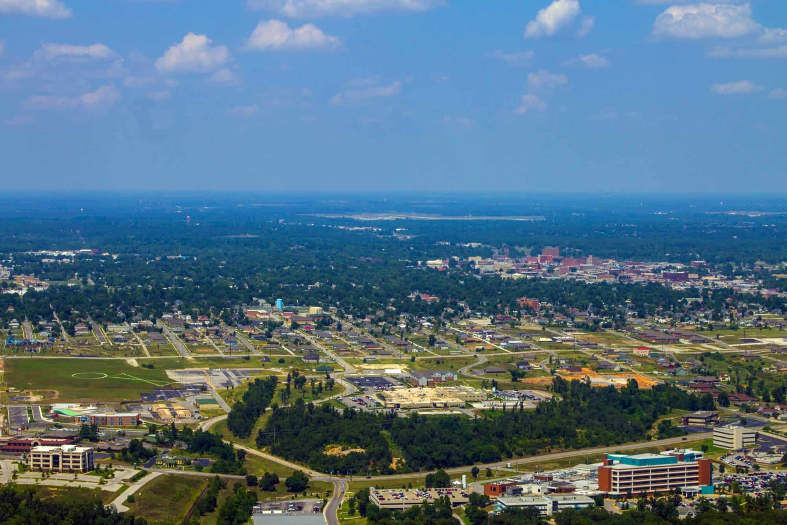
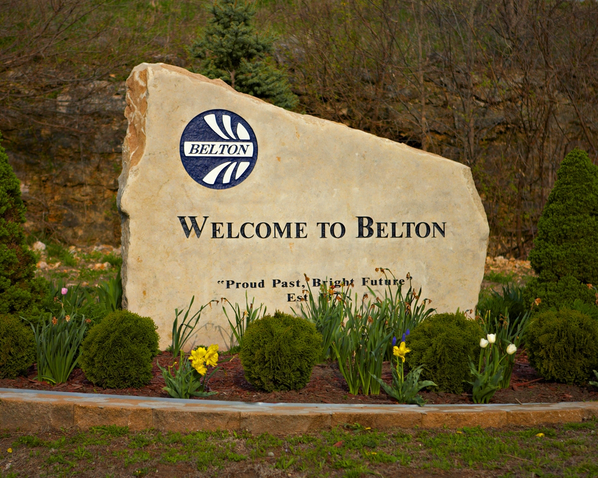

KANSAS CITY, MISSOURI
BORN IN KANSAS CITY, BOIIIII! I don't remember anything about this as we moved before I was 1. But I'm happy to be able to call it my birthplace.
CAMERON, MISSOURI
Ok, Cameron is much less exciting than KC. But even if there was any excitement, I again wouldn't remember as we moved a few months after I turned 2.
DES MOINES, IOWA

We moved here after my father graduated from medical school. He did his residency in Des Moines for a couple of years. As with the prior two locations, I don't remember anything from here.
MALTA, MONTANA
After dad finished his residency, we moved up to Montana where my dad and one of his best friends started their own clinic. Which, when you think about it, is absolutely NUTS! Who just moves their young family to rural Montana and starts a business?
Anyway, we were here for about 4 years and I DO have memories! I almost ran over my brother with my mom's car after undoing the emergency brake. Was a whole thing. But hey, no one died or was even hurt.
Actually, other than that almost accident, I really only remember the Dairy Queen that's in the picture, above. It was a great Dairy Queen!
Oh, and Malta starts this weird aspect of my life that was living in places named after locations in Europe that are thousands of times cooler than the places I grew up that stole those names.
GLASGOW, MONTANA
We lived in Glasgow for about 2 years. Not a whole lot happened here. Played some sports, went to some school. Had a couple malamute pups. This is the place that my parents developed their preference for living out in the country, rather than in town.
WHITE SULPHUR SPRINGS, MONTANA

White Sulphur Springs was dope, even for having only about 900 people living in it and its surrounding area of ranches. We lived on a 2,000 acre ranch (didn't own it,) and were surrounded by nothing but some forest-y area and mountains.
If you look at the pic, above, you can see Stageline Pizza. It was owned by the family of my best friend and it was a pizza place that was also the local movie theater! It was amazing. When I would spend the night, we'd watch a movie, get some snacks, and borrow an NES and some VHS from the front of the store. It was the best.
Turns out that, once we came back to visit, we learned that my friend's mom was the local drug dealer and she and my friend's dad got divorced. It was super weird because my mom ran the D.A.R.E. campaign.
We lived here for somewhere between 2 and 4 years. But I don't really remember, exactly.
WARSAW, MISSOURI
Hey, another town that stole its name from a European city that was SO much worse than the place in Poland. I lived here until I graduated from high school; about 7 years?
A bastion of racism and methamphetamine and the dumbest of christianity. Was happy to finally get out.
COLUMBIA, MISSOURI
I attended college here for a year. At MU, like in the picture? Heck no! I attended the college that may have started the whole online college thing: Columbia College! At the time, it hadn't jumped into the online college thing and was a campus-only experience.
Wasn't a bad school, I just didn't take to college terribly well and decided to leave.
SPRINGFIELD, MISSOURI
And where did I leave for? That's right, Southwest Missouri Statue University in Springfield! (Yes yes, it's MSU now. I don't care. That name change didn't happen until the year after I graduated.)
I spent 4 or 5 years in Springfield and generally enjoyed it. Made some good friends, got a bachelors degree, and had some weird, part-time jobs.
JOPLIN, MISSOURI
One of the part-time jobs became my full-time job and I was ushered into management. Probably the most dumb thing I've ever gone along with. No need to go into why it was a terrible decision by me.
The only thing I really know about Joplin is that it's flattened by a tornado ever 4 or 5 years.
Anyway, lived here at another person's house for a few months while a friend and I worked on getting our new store set up and read to go in...
BELTON, MISSOURI
...Belton. Belton, MO. Lived here a year before the whole store thing went stupid. It's a stinky little bedroom town. That's about all I know about it.
While here I started working a new job, which I had to drive an hour for, each day, that was in...
LEES SUMMIT, MISSOURI
Probably one of the nicest places I've lived in my adult life. Close to the city but small enough to feel like it wasn't crazy. Lived there for maybe 3 years? But, the rent went up like crazy, so I decided to move to...
OVERLAND PARK, KANSAS

To beat the crazy rent in Lees Summit, I decided to move in with one of my best friends. We were great roommates! But then he got married and I couldn't afford the rent myself. Again.
But living in Overland Park was really nice. Had a great apartment that was incredibly quiet. It was actually very near the above picture. I used to walk around that building/block. At least, when the geese that lived there didn't decided to attack.
GARDNER, KANSAS
Luckily, I was able to find a townhome with a rental amount that I could afford. Finally! I just had to move fairly far from the city to do it.
But Gardner's a nice, slow-moving place. Mostly fits my personality well. I'm pretty sure I've been here 6 years, now and I'm not sure when/if I'll move out!